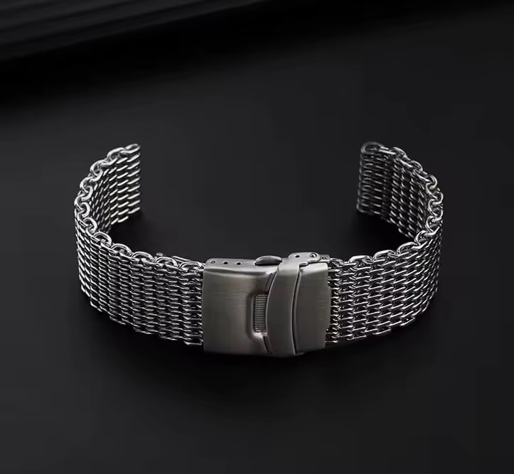
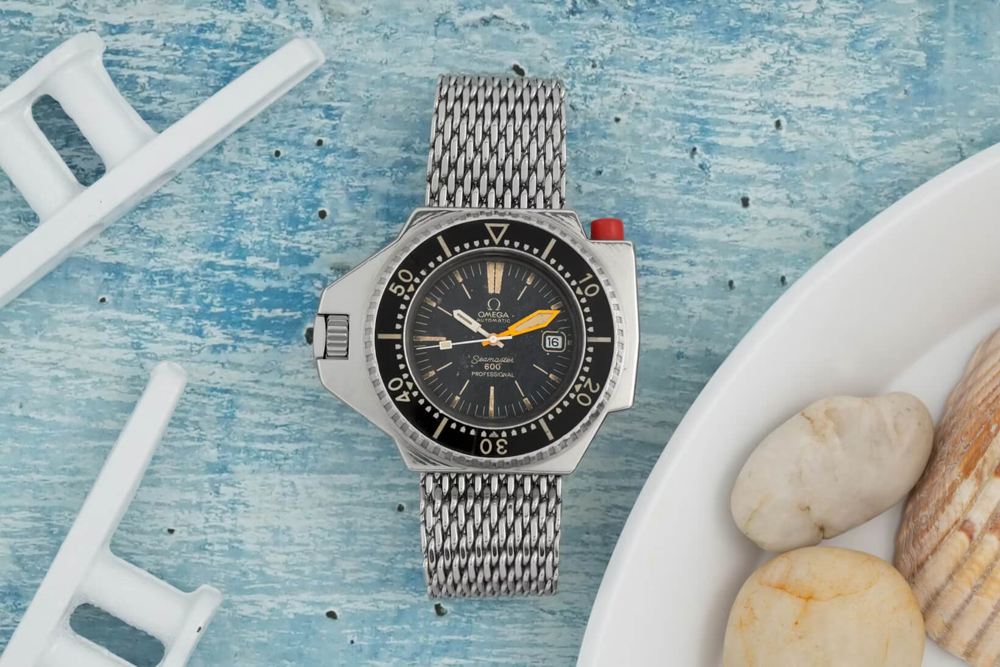
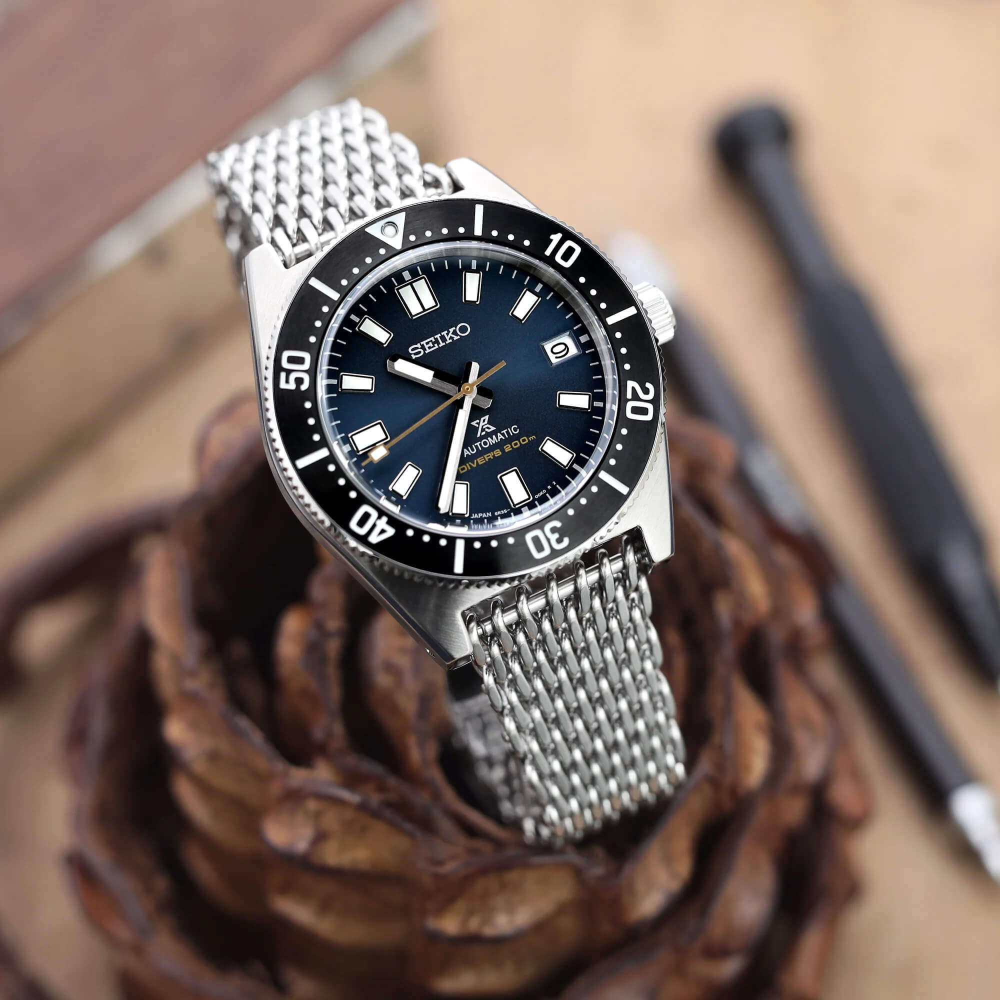
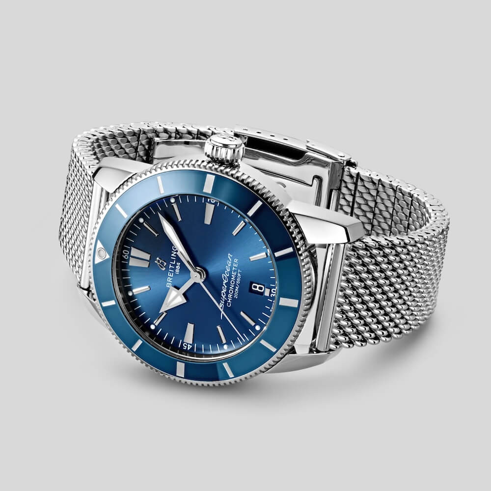
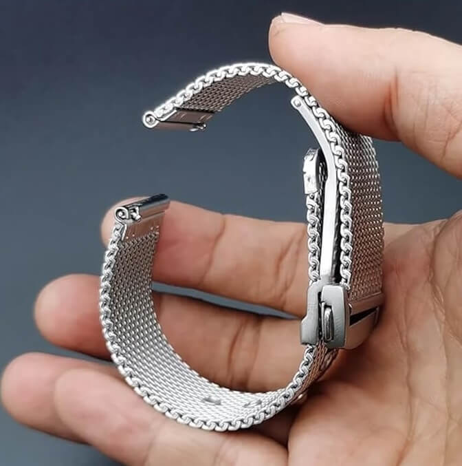

Shark Mesh Watch Bracelets
I bought a new bracelet recently. Well actually it’s a very old bracelet. But new to me. This wasn’t the results of a days long research. In fact it was almost an impulse buy, and if I am honest, bought it purely for how it looks, and a bit of nostalgia. I bought a shark mesh.
 Nenad Pantelic • December 21, 2025
Nenad Pantelic • December 21, 2025

Now comes the boring part: waiting for it to arrive. Of course, as I await delivery, I have spent my time reading about the history and technical features.
First the cool part: this design holds a heavy dose of 1970s marketing bravado. The "shark" name isn't just for show. It was famously pioneered by Omega for the legendary "Ploprof." During the development Omega needed a strap that could survive the tough conditions of professional saturation diving.
They landed on this chainmail and marketed it as "shark-proof". The claim was that the steel loops could withstand a shark's bite without snapping. I have to admit, this is a genius marketing move and an attention grabber. You kinda want to test the claim yourself.

The Structure of Shark Mesh
Shark mesh feels so different from a standard three-link bracelet. It is created by weaving thick stainless steel wire into interlocking loops.
Because there are no rigid pins connecting the links, and the size of each loop is very small, the bracelet feels fluid. It drapes over the wrist in a way that feels almost organic, despite being made of metal.
Another defining feature is the "straight-end" design. Unlike the bracelets that use curved end-links to hug a watch case, shark mesh typically has a raw, open loop through which the spring bar passes. So there is a visible gap between the watch and the bracelet. I admit, that is a trademark feature of the mesh bracelet, and kinda the main reason I wanted one.

I am far from the type of guy who likes to "cosplay" or pretend to be something I’m not. I simply like how the mesh looks. Plus, I own several chunky divers, and I think a non-tapering mesh will suit them perfectly.
For example, I don't think it will look at all out of place on my Unimatic U1, or on 43mm Duro.
Pros and Cons
Comments in the Slack communities and on various forums are divided. Some people love the look, and others really don't. It looks like that living with a shark mesh has a specific set of benefits and trade-offs. Enthusiasts point out that the primary advantage is breathability: because the weave is so open, air flows right through it and water drains away instantly.
Also, the material is super durable, completely immune to the rot, cracking, or stretching that eventually affects leather or rubber.

On the other side the sheer bulk of the steel can be fatiguing, and the open loops can occasionally catch on arm hair if the mesh isn't finished to a high standard.
Most shark mesh bracelets do not taper, which makes them feel quite bulky on the underside of the wrist.
Omega's Forum crew has another complaint: if a mesh uses a deployant clasp, then the two overlapping layers create significant mass. I decided to go with a standard folding clasp, so at least that part shouldn't bug me.

The Sizing Challenge
What will likely bug me is the sizing process. I have already borrowed a Dremel, and I just hope my hands will be steady enough to make clean cuts on each loop. My goal is to get it right the first time (yeah, I know) so I won't need to sand or fix the finish once it's sized.
Most high-end modern versions have removable H-links or screws to make sizing easy. I went with a cheaper, old-school version instead, which means I will be doing the sizing the hard way.
Conclusion
It is a funny dichotomy when you think about it. I have always found multi-link bracelets, like a five-link or a Jubilee, to be far too dressy looking. But the shark mesh, which is also made of countless small links, feels entirely different. It is super "toolish" and rugged, if you ask me.
There is just something about seeing an old skin-diver with straight lugs, a Seiko Tuna, or a Ploprof on a chunky mesh. It makes the watch look up for the task. Unapologetically bold. And brings a cool factor that a standard flat-link bracelet simply cannot achieve.
I am looking forward to experiencing this setup and giving it a real go on the wrist. Who knows? Maybe the mesh will eventually beat out my usual three-link Oyster-style bracelets for a permanent spot in the rotation.
It has a lot to prove, but it has already won in one category: it easily has the coolest name out there 🦈